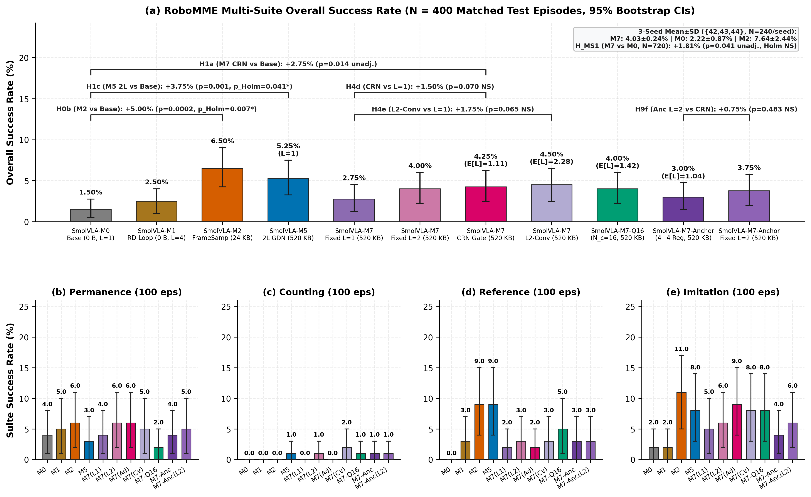

Dissociating Associative State Writing from Multi-Hop Readout
Before scaling to 3.44B π0.5, 87 shortcut-audited synthetic runs and 10,720 SmolVLA rollouts isolate exactly when negative-eigenvalue state transitions versus weight-tied iterative readouts are required.
Standard contraction-only linear RNNs restrict their update step size to βt ∈ (0, 1), preventing single-layer sign inversion when containers swap positions. Expanding the Gated DeltaNet transition to βt ∈ (0, 2) unlocks Householder reflections (I − 2kk⊤ with eigenvalue −1), lifting 1-layer S8 swap tracking from 25.1% → 100.0 ± 0.0% both in-distribution (k ≤ 4) and zero-shot OOD (k = 5, 6). Conversely, when causal chains arrive before the disambiguating target cue (Task 1A-Retro), single-pass readouts (L = 1), parallel multi-query heads, and untied 6-layer stacks remain stuck near chance (17.1%–21.4%), whereas our weight-tied Prelude–Core–Coda loop reaches 97.1% ID and extrapolates zero-shot to 80.4% at OOD k = 5 while cutting ID recurrent FLOPs by 56% via Common-Random-Number (CRN) quantile halting.


Left: Sharp double dissociation between β ∈ (0, 2) associative writing on online S8 swaps (top) and weight-tied multi-hop readout on retroactive pointer chains (bottom). Right: Clean diagonal L ≥ k reasoning staircase across chain lengths k ∈ {1..6}. (Click any figure to enlarge.)
| Architecture (3 seeds, shortcut-audited) | Params | 1A-Online ID | 1A-Online OOD | 1A-Retro Fwd ID | 1A-Retro OOD (k=5) |
|---|---|---|---|---|---|
| 1-Layer GDN (β ∈ (0, 1), L = 1) | 0.53M | 25.1% | 16.9% | 19.1% | 14.1% |
| 1-Layer GDN (β ∈ (0, 2), L = 1) | 0.53M | 100.0% | 100.0% | 18.1% | 13.6% |
| Untied Deep Readout (6 layers, 3.7× params) | 2.42M | 20.2% | 14.8% | 21.4% | 14.2% |
| DeltaLoop (β ∈ (0, 2), L = 6, weight-tied) Ours | 0.66M | 63.6% (s0: 99.7%) | 47.1% (s0: 90.0%) | 94.8% (β∈(0,1): 97.1%) | 76.4% (80.4%) |
To verify whether compact recurrent states survive real visual observations before investing in 3.44B-scale training, we evaluated 2-layer Gated DeltaNet memory (520 KB state) on cached 450M lerobot/smolvla_base across 10,720 closed-loop RoboMME rollouts. While freezing SmolVLM2 over heavily pooled 8×8 tokens imposed a <10% closed-loop actuation bottleneck (5.25% vs. 1.50% memoryless, pHolm = 0.0420), linear probes on the frozen 520 KB recurrent state decoded 93.52% of repetition counts and localized hidden manipulation targets to 4.36 px (2.44× sharper than 32-frame FrameSamp) — proving that the bottleneck lay in frozen backbone actuation rather than GDN memory capacity.


Left: Linear probes on frozen 520 KB 2-layer GDN states retain 93.52% count accuracy and 4.36 px spatial target error, with monotonic hop-by-hop dereferencing across ℓ = 1 → 4. Right: Phase-1 closed-loop suite gains over memoryless SmolVLA that motivated end-to-end scaling to 3.44B π0.5.
fp32 GDN state already preserves >93% of task-critical history on real RoboMME trajectories.